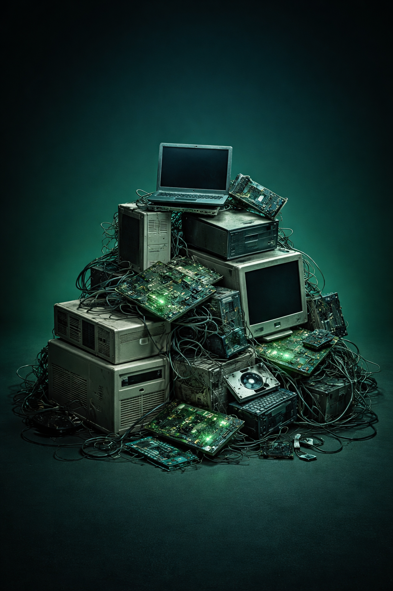

Não sabe o que fazer com aquele celular quebrado, notebook antigo ou monte de cabos? A gente resolve. Descarte seus eletrônicos de forma segura, gratuita e responsável — bem pertinho de você.

Digite seu CEP e descubra os pontos de coleta perto de você
O descarte adequado dos eletrônicos traz benefícios para todos
Recuperação de metais preciosos e componentes que podem ser reutilizados.
Evita contaminação do solo e da água por substâncias nocivas dos eletrônicos.
Processamento adequado de baterias, circuitos e outros materiais perigosos.
Aceitamos diversos tipos de eletrônicos e equipamentos